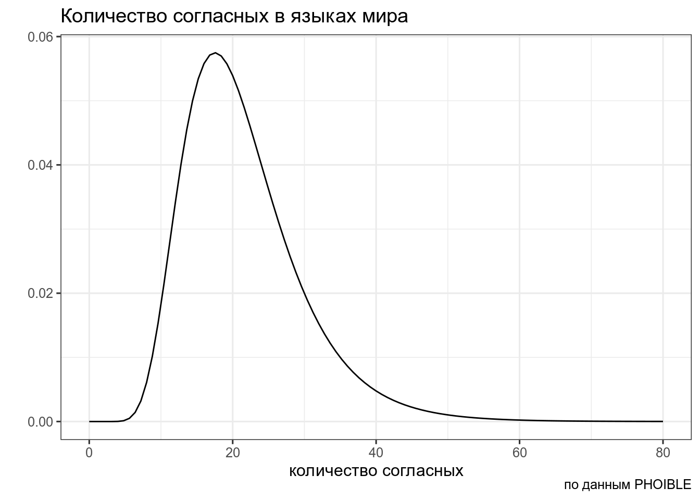
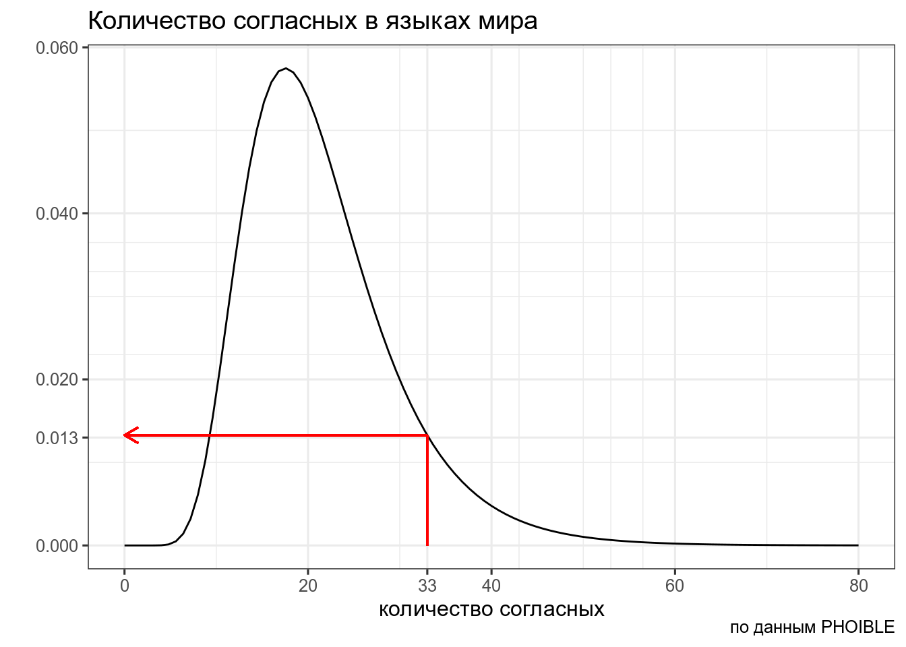
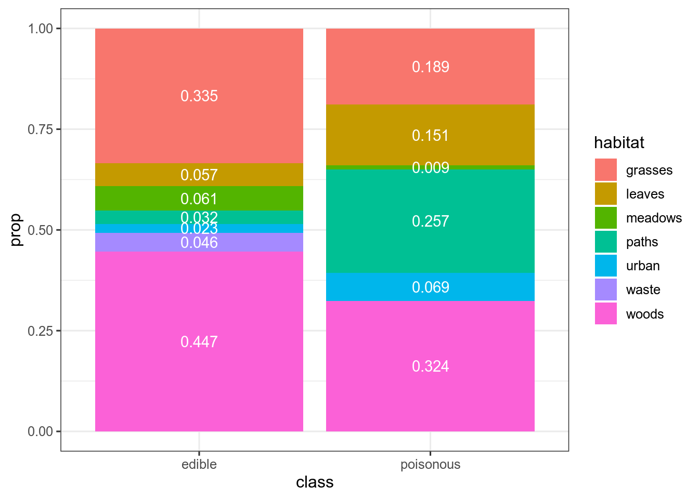

Предположим что распределение количества согласных в языках мира можно описать логнормальным распределением с логсредним 3, и логстандартным отклонением 0.37:

Тогда вероятность того, что в выбранных произвольно языках окажется от 23 до 32 согласных равна интегралу нормального распределения в указанном промежутке:
\[P\left(X \in (23,\, 32) | X \sim \ln\mathcal{N}(\mu = 3,\, \sigma^{2}=0.37)\right) = ...\]
## [1] 0.2530466Когда мы говорим про функцию правдоподобия, то мы уже нашли еще один язык в котором оказалось 33 согласных. Нас интересует, насколько правдоподобна функция логнормального распределения с логсредним 3 и логстандартным отклонением 0.37 при значении переменной 33. Это значение равно функции плотности:

\[L\left(X \sim \ln\mathcal{N}(\mu = 3,\, \sigma^{2}=0.37)|x = 33\right) = ...\]
## [1] 0.01327918А что если у нас не одно наблюдение, а несколько? Например, мы наблюдаем языки с 33 и 26 согласными? События независимы друг от друга, значит, мы можем перемножить получаемые вероятности. Так как результат перемножения маленьких чисел дает маленькие числа, с которыми компьютер не всегда хорошо справляется, для практических вычислений вместо функции правдоподобия используют ее натуральный логарифм (логарифмическая функция правдоподобия).
## [1] 0.0004317626В итоге:
Интеграл распределения или сумма вероятностей равен 1. Интеграл функции правдоподобия может быть не равен 1.
The Law of Likelihood states that “within the framework of a statistical model, a particular set of data supports one statistical hypothesis better than another if the likelihood of the first hypothesis, on the data, exceeds the likelihood of the second hypothesis” (Edwards, 1992, p. 30).
Важно понимать, что само по себе значение правдоподобия бессмысленно, оно важно для сравнения со значениями правдоподобия разных моделей. Представим, что мы пытаемся выбрать между двумя моделями:
L1 <- dlnorm(33, 3, 0.37)*dlnorm(26, 3, 0.37)
L2 <- dlnorm(33, 3.5, 0.25)*dlnorm(26, 3.5, 0.25)
L2/L1## [1] 4.303835Как мы видим, на основании наших (фейковых) данных \(H_2\) в 4 раза более вероятнее, чем \(H_1\). Надо отметить, что не все тепло относятся к сравнению моделей (см. Gelman, Rubin 1994).
Представим себе, что у нас есть \(k\) гипотез \(M\). Тогда формула Байеса может выглядеть вот так:
\[P(θ|Data, M_k) = \frac{P(Data|θ, M_k) \times P(θ| M_k) }{P(Data|M_k)}\]
Коэффициент Байеса определяют как соотношение предельных правдоподобий (\(P(Data, M_k)\)) моделей (в принципе их может быть больше двух):
\[ BF_{12} = \frac{P(Data | M_1 )}{P(Data | M_2)} \]
Вычислять предельные правдоподобия порой достаточно сложно, так что иногда используют численную аппроксимацию.
Рассмотрим пример эксперимента Бернулли:
Мы помним, что эксперимент Бернулли описывается биномиальным распределением:
\[P(k | n, p) = \frac{n!}{k!(n-k)!} \times p^k \times (1-p)^{n-k} = {n \choose k} \times p^k \times (1-p)^{n-k}\]
Так что в случае наших моделей будет:
\[P(Data | M_1) = {n \choose k} \times p^k \times (1-p)^{n-k} = {699 \choose 58} \times 0.08^{58} \times (1-0.08)^{699-58} = 0.0523985\]
## [1] 0.0523985\[P(Data | M_2) = {n \choose k} \times p^k \times (1-p)^{n-k} = {699 \choose 58} \times 0.085^{58} \times (1-0.085)^{699-58} = 0.04402509\]
## [1] 0.04402509Тогда коэфициент Байеса будет
## [1] 1.190196В датасете c грибами (взят c kaggle) представлено следующее распределение по месту обитания:

Мы нашли некоторый новый вид грибов на лужайке (grasses), а потом в лесу (woods). Давайте посчитаем \(BF_{edible\ poisonous}\):
\[L(grasses,\ wood|edible) = 0.335 \times 0.447 = 0.149745\]
\[L(grasses,\ wood|poisonous) = 0.189 \times 0.324 = 0.061236\]
\[BF_{edible\ poisonous} = \frac{L(grasses,\ wood|edible)}{L(grasses,\ wood|poisonous)} = \frac{0.149745}{0.061236} = 2.445375\]
Вашего друга похитили а на почту отправили датасет, в котором записаны данные о погоде из пяти городов. Ваш телефон зазвонил, и друг сказал, что не знает куда его похитили, но за окном легкий дождь (Rain). А на следующий день — сильный дождь (Rain Thunderstorm). Посчитайте \(BH_{San\_Diego\ Auckland}\) с точностью до 1 знака после запятой.
До сих пор мы рассматривали одну точечную модель, сравнивая доли 0.08 и 0.085.
Функцию правдоподобия для первой модели мы уже считали:
## [1] 0.0523985Функция правдоподобия второй модели – это среднее функций правдоподобия всех входящих моделей:
## [1] 0.05383749Байес фактор:
## [1] 1.027462Как видим, наша распределенная модель немного предпочтительнее, чем точечная.